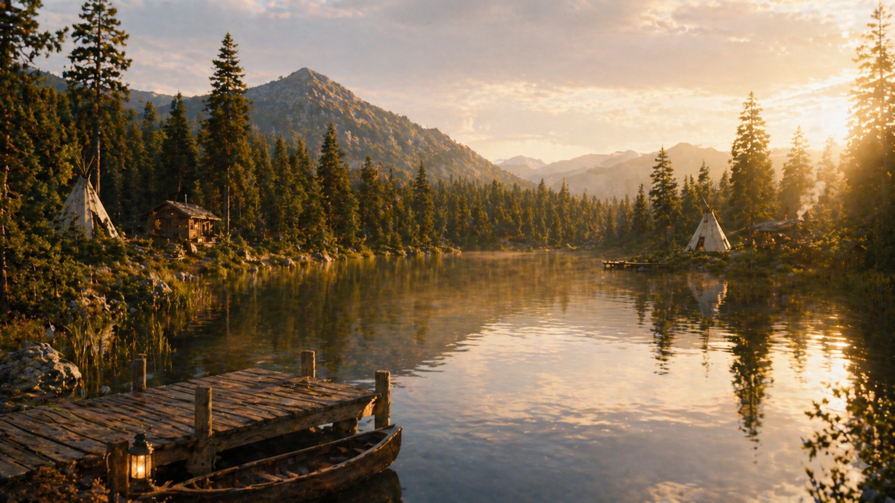

Sérénité
Un environnement calme pour apaiser le mental et retrouver une sensation de paix.
Le lac offre une ambiance douce et silencieuse, parfaite pour ralentir, observer et laisser retomber le stress du quotidien.
Le son de l’eau, la lumière naturelle et l’ouverture du paysage créent un environnement propice à la méditation, à la contemplation et au ressourcement intérieur.

Une énergie douce, un espace de détente et une connexion naturelle au moment présent.
Un environnement calme pour apaiser le mental et retrouver une sensation de paix.
Un décor ouvert et lumineux qui invite à ralentir et simplement profiter de l’instant.
Un contact direct avec la nature pour revenir à soi avec douceur et clarté.

“Près du lac, le temps ralentit, le souffle s’apaise et l’esprit retrouve sa clarté.”